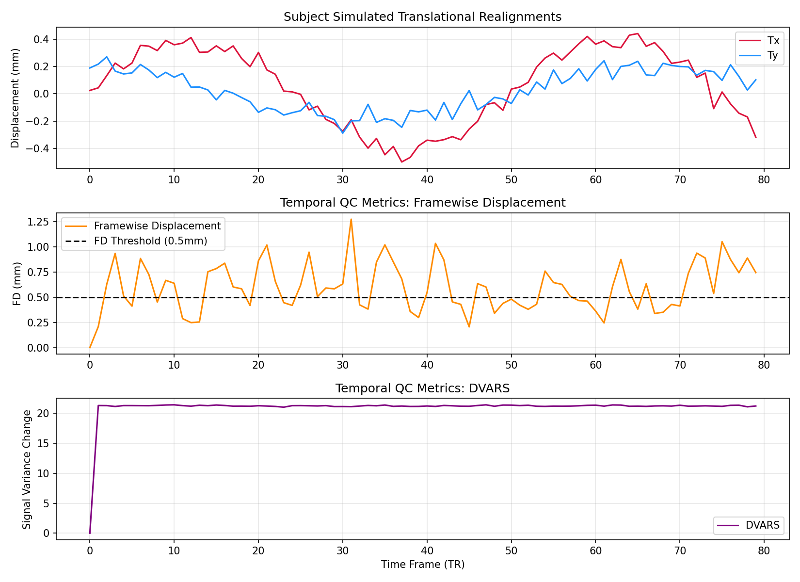

1. Temporal Signal-to-Noise Ratio & Quality Assessment
Mean Framewise Displacement
0.5949 mm
Max Movement Spike
1.2752 mm
ML Task Decode Accuracy
45.0%
Pre-processed Realignment Parameters & Framewise QC Timeseries

2. Functional Task Activation (First-Level GLM Contrast Map)
Estimation contrasts active temporal blocks against rest periods. Hotter voxels denote strong task compliance.
3. Target Region Functional Connectivity Map
Cross-correlation matrices calculated over target default mode network coordinate seeds.
Disclaimer: This software project and pipeline output metrics are intended exclusively for academic study, research validation, or portfolio demonstration, and are not validated for actual diagnostic use in clinic settings.